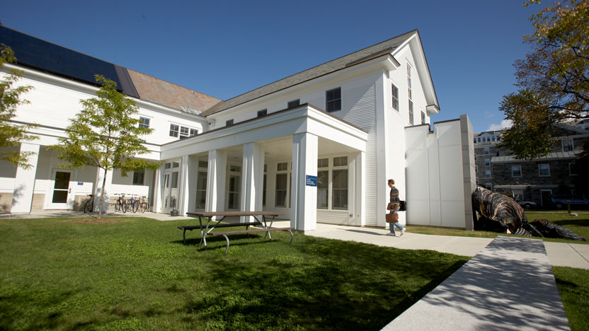

Abstract
Women participation in STEM fields is up across must subdivisions. However, computer science and computing related subdisciplines lag behind. This article surveys some of the social, historical, and economic forces that contribute to this phenomenon. We examine how positive female role models contribute to retention and engagement. We consider one such instance; namely, Middlebury’s Women in Data Science conference.

Women in Data Science
Women in STEM fields have dramatically increased over the last 80 years. In 1960 women accounted for 8% of chemists. That number is now up to 39%. Over the same time period, women in biology increased from 25% to 50%. However, engineering fields have remained relatively stagnant, with women in computing related occupations declining since 1990. Currently, 1 in 5 computing degrees are awarded to women. Given that other STEM fields are approaching parity, what’s up with computer science?
Historically this was not the case. In the early 20th century, computing jobs were associated with secretarial and clerical positions, meaning they were often staffed by women. By WWII women made up the majority of programming jobs. In fact, women were some of the early trailblazers in computing: 6 female programmers worked on the first all-electronic computer; Grace Hopper designed, A-0, the first compiler; Margaret Hamilton engineered software for the Apollo Program, and Katherine Goble, Dorothy Vaughan, and Mary Jackson worked on calculations critical to the launch.
However, the newly found prestige in the field of computer science actuated the decline in female participation. Increasing professionalization across the field meant a stronger connection to engineering; a male dominated industry due to its cultural and professional relations with heavy industry. One aspect in which this manifested was the creation of professional organizations, networks, and hierarchies that benefitted and encouraged male participation. Discriminatory hiring practices and stringent undergraduate admissions also put downward pressure on female participation. Perhaps most damning was the cultural association of the personal computer with boys and men. Primarily propagated through the gaming industry, this discouraged girls from pursuing computing careers at a young age. The complex matrix of cultural currents and historic events has left computing a male-dominated field.
But why do we even care? From a moral standpoint, it seems strange to construct social barriers that prevent individuals from entering a discipline based on uncontrollable traits. What if left-handed people were implicitly deterred from being doctors? Intuitively, we can agree that handedness ought not have a bearing on one’s qualifications to practice medicine. It is not a logical leap to say the same about gender in computer science. However, suppose you’re a pragmatist. Morals aside, the current system works, right? The problem is that when we culturally alienate half of the population from engineering and computing jobs, everyone misses out on the potential idea generation. This is particularly true in practical engineering and data science, where diverse backgrounds can often better inform application. Car seats were not initially designed with pregnant women in mind, leading to unnecessary deaths. Large data sets can benefit from the context of lived-experience. Perhaps most importantly, diversity can facilitate creativity and innovation: A culture of complacency breeds complacent ideas. Possessing a more accepting mindsend in relation to people can transfer to a more accepting one in relation to ideas.
Unfortunately, increasing female participation in commuting is not as easy as inserting a column into a data set (although that itself can be tricky at times). Questions of acceptance and fairness raise themselves. How can we uphold meritocratic ideas when we clearly don’t live in one. Although laws are quick to change, culture and people are not. Perhaps one answer to this question is to showcase the work of outstanding female professionals in computing and computing-adjacent fields.
Women in engineering fields often describe feelings of isolation, lack of voice, and lack of belonging. Reports indicate that women find supervisors less receptive to their suggestions. They are less likely to agree that it is safe to speak up when compared to their male colleagues. Women suffer from a lack of other women in industry. This can make it harder for female computer scientists to find role models, and more likely to experience sexual harassment. Studies find that women are at increased risk of sexual discrimination in workplaces where they make up less than 25% of the labor force, and are less likely to speak up about these incidents to their male colleagues. Surveys also find women who left STEM careers were less likely to have training and development opportunities, support from coworkers or supervisors, and help balancing work and nonwork roles. Clearly, providing good role models and positive points of contact–namely in the form of other women–can create a more positive, safe work environment and increase recruitment and retention in the industry.

Of course, this logic extends itself to undergraduate education as well. Middlebury’s Women in Data Science conference is a step towards creating a more equitable computing landscape–both inside and outside of the classroom. The conference also demonstrated the interdisciplinary nature of data science, showcasing data driven research from traditional ML specialists and computer scientists to field geographers and political scientists.
Dr. Amy Yuen started out the conference by asking Is the U.N. Security Democratic? The Security Council has five sitting members and 10 non-permanent members elected on an annual basis, and is one of the critical apparatuses for maintaining geopolitical stability. Sitting members possess veto powers and the ability to sponsor policies, whereas non-permanent only possess the latter. Given the power imbalances, Dr. Yuen turned to the data to find non-traditional avenues of power and metrics of representation. Her team constructed two theoretical council make-ups: One which represented a perfectly representative council, and the other a perfectly unrepresentative one. Using cumulative service year spent on the council per nation, and controlling for variables like council membership, Dr. Yuen was able to demonstrate that the council is mostly democratic.
Dr. Jessica L’Roe studies human-environment relationships in regions experiencing rapid change, and self-describes her work as “connecting people to pixels.” In the conference she presented her research in both Brazil and Africa. To prevent deforestation in Brazil, the government imposed an acreage cap on property size. Dr. L’Roe found that large landowners were registering under the size limits, explaining the increased rates of deforestation. In Africa, her team conducted a brute force, interpersonal survey of local property owners. Alongside two local women, they were able to conclude that external owners controlled much of the land, forcing local woodcutters to fell trees on restricted land. Dr. L’Roe also discussed the gender expectations associated with being a woman in science, and the importance of having positive, female role-models at critical points in her career.
Dr. Biester studies natural language processing where she hopes to better understand the human language through computational methods. Her recent work deals with manifestations of depression in text. Depression can be insidious in that depressed individuals may not even realize that they are displaying depressive tendencies. This can hamper effective treatment. To notice depression in its early stages, Dr. Biester developed a linear ML model to detect self-report patterns indicative of the underlying condition. To accomplish this, she turned to one of the internet’s largest sources of human text: reddit. Cleverly partitioning the text into control and test groups, she quite literally processed all of reddit, running calculations that lasted weeks.
Dr. Sarah Brown studies how data science can be integrated with human systems to improve outcomes. In her presentation, she discussed three “keys” that enabled her to find success in her work. Her first key arose in the context of developing a model to measure PTSD recovery progress. She realized that scores were only used to rank individuals who already possessed the condition, and were not scored relative to healthy individuals. The first key was then realizing that data resides in contexts. Her second experience dealt with the fundamentally incompatible notions of fairness: Error rate parity and calibration. She found that certain disciplines may be biased towards one definition, leading to the second key: disciplines are communities. Her final experience concerned work as a council member on the National Society of Black Engineers. She found that regional chapters were not accepting the program set by the national board. Ultimately, she discovered the disconnect was a restraint imposed by the universities through which the chapters were operating. Rather than pushing policy through, she realized the third key: meet people where they are.
Dr. Brown’s presentation also raised philosophical questions concerning notions of fairness and the scope of decision making within data science. However, Dr. Brown illustrated that fairness need not come at the expense of accuracy. She discussed one study which reviewed an algorithm for allocating social workers to people in need of medical care. The algorithm ultimately based decisions on who was in the most treatment programs; the logic here being that those individuals seeing more specialists would need more help scheduling treatment. The review found that the algorithm discriminated against black and brown individuals. In retrospect, this was obvious: Clearly, individuals who are seeing more doctors are likely to have time, money, and know-how to effectively navigate the healthcare system. The researchers proposed a revised algorithm that allocated social workers on the basis of symptoms, resulting in a far more equitable and accurate outcome.
One major reason women tend to leave computational jobs is a lack of work-related purpose. Academic and professional treatments of computation jobs can often exist in a vacuum of mathematical theory and computational mechanisms, without any clear context. Yet a common theme throughout all these presentations was the exact opposite: The use of context to construct experiments and meaningful interpret results. Theoreticians will always be important in driving the field of data science forwards. However, claiming that theory is the only way to do data science is as false as claiming that the domain is only for men.
Reflection
I really enjoyed the presentations at the conference since they offered great insight into what type of research Middlebury (and other) professors are doing. The most interesting part of this blog post was researching some of the sociological forces that have contributed to a decline in women’s participation in computer science. I was particularly struck how “professionalization” of the field led to men taking a dominant role in the industry. I also never considered that living and/or working among a diverse population can lead to more diverse thinking. I am curious to learn more about contemporary thinking concerning the moral position of data science; particularly when data relates to people.